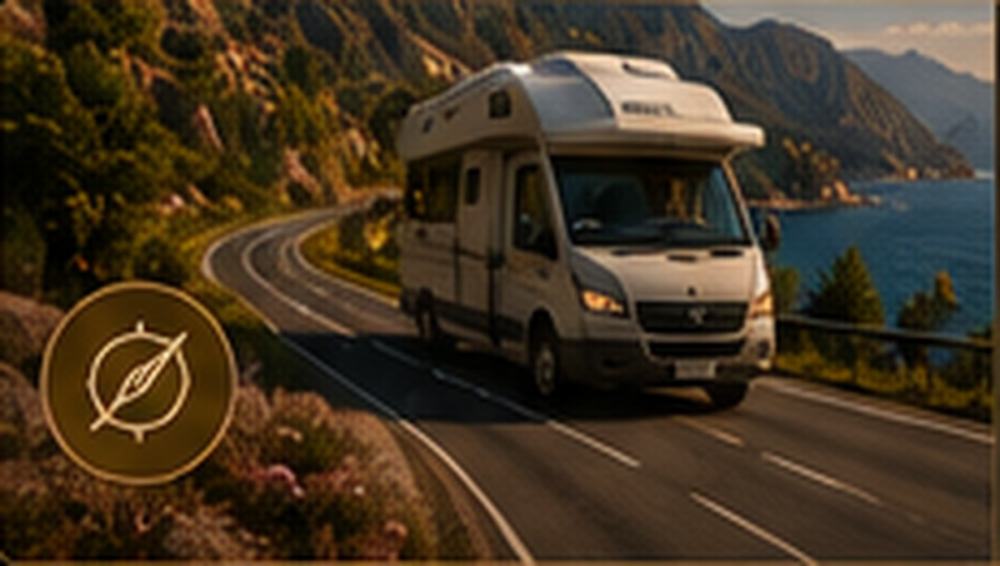
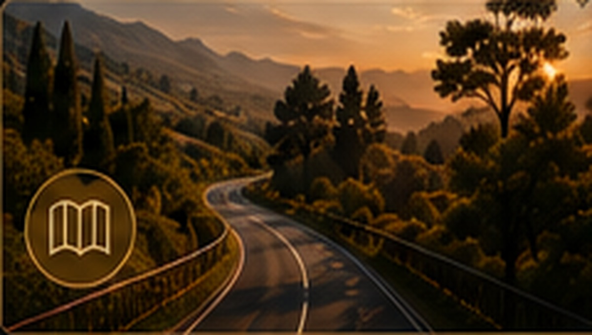
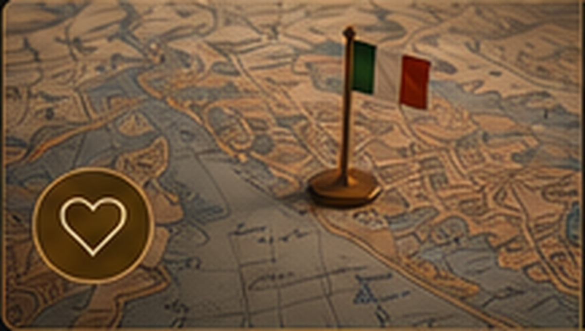
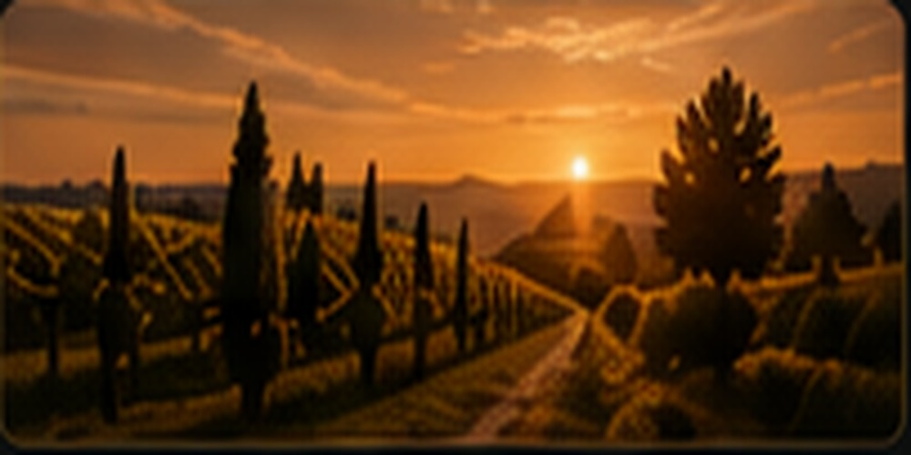
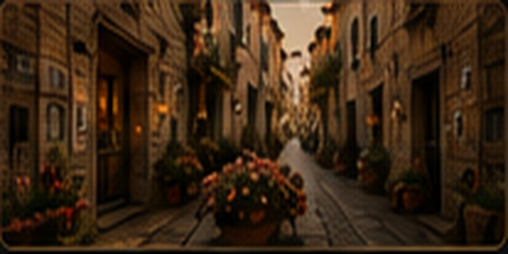
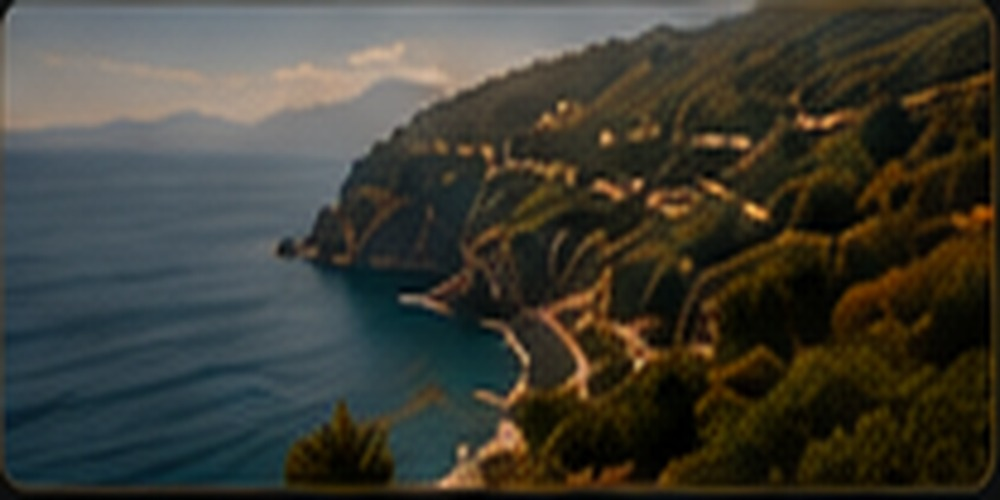
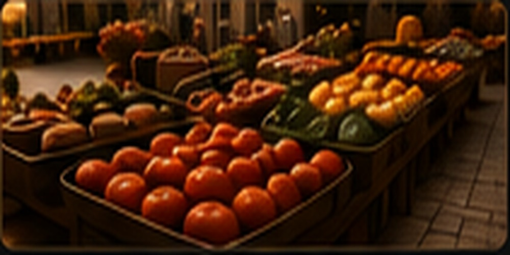
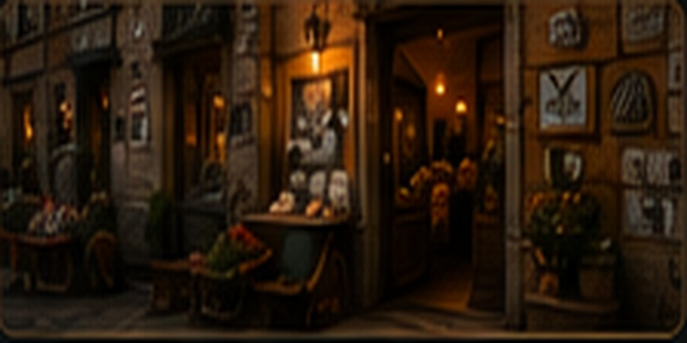

Viviamo
il sogno.
Wir leben den Traum.
Incanto – Verzauberung.
Die kleinen und großen Momente,
die eine Reise unvergesslich machen.
L'arte di vivere.
DIE KUNST, ZU LEBEN.
Wonach ist euch heute?
✣Drei Wege zu eurer nächsten Reise
✣

♡
Unsere Lieblingsrouten
Unsere persönlichen Routen, Erlebnisse und Empfehlungen.
AUF DER KARTE ANSEHEN →Italien Route für Route verstehen
Eine maßstabsgetreue Karte mit Städten, Küsten, Seen und Landschaften. Blättert durch alle Reisen und seht sofort, wo sie beginnen, welche Orte sie verbinden und wo sie enden.
Incanto-RoutenverlaufStraße · gestrichelt: Fähre oder Boot
Attimi d’Incanto – Augenblicke der Verzauberung
✣auf einer Piazza.

bei Sonnenuntergang.

der verzaubert.

die man nie vergisst.

am Morgen.

Geschichte.
Zwei Routen direkt vergleichen
Wählt zwei Reisen aus. Dauer, Strecke, Schwerpunkte, Reisegefühl und Wohnmobil-Tauglichkeit stehen anschließend ohne Umweg nebeneinander.
Routen, die nach Incanto klingen
Ausgewählte Grundrouten, Quellen und unsere eigenen Abzweigungen.